Conoce más sobre nuestra parroquia, nuestras autoridades y los proyectos que impulsamos para el desarrollo comunitario. Huachi Grande es una parroquia rural con historia, compromiso y visión hacia el futuro.
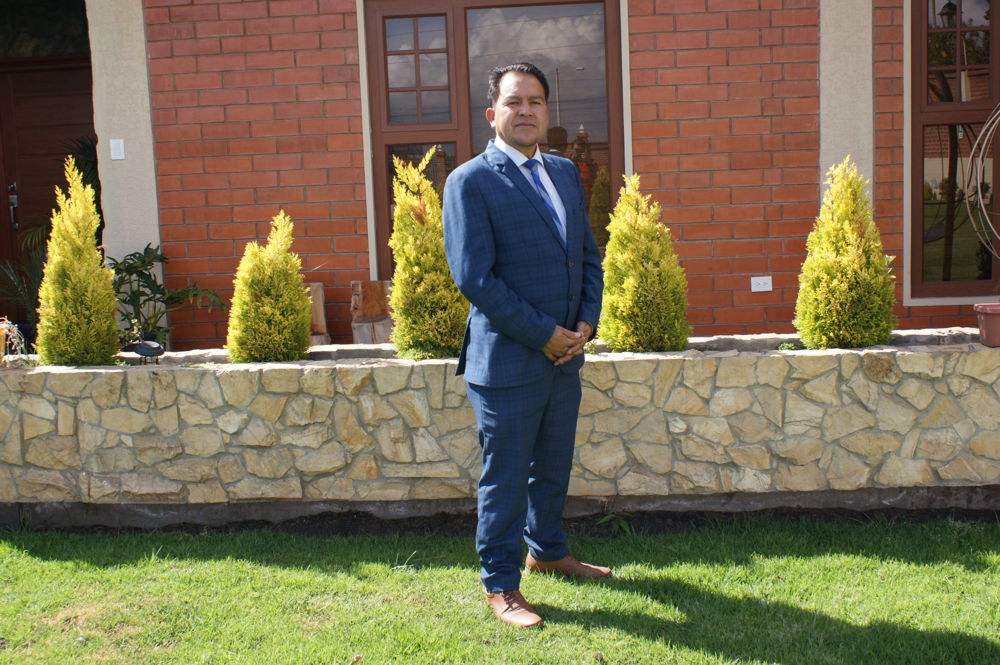
Presidente
Vicepresidente
Primer Vocal
Segundo Vocal
Tercer Vocal
Huachi Grande está encaminada al desarrollo y desde el Gobierno Parroquial impulsamos obras que mejoren la calidad de vida de sus habitantes.
Los huertos que rodean a Huachi Grande embellecen su territorio rural y la cadena montañosa de los Andes protege sus horizontes agrícolas.
En Huachi Grande gran parte de su población es mestiza, ejemplo de gente valiente y esforzada que ha dejado un legado de historia y libertad.
Altura / msnm
Superficie / Km²
Habitantes
Temperatura °C
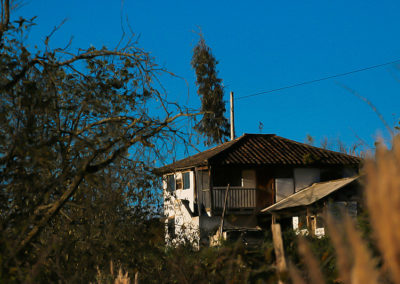
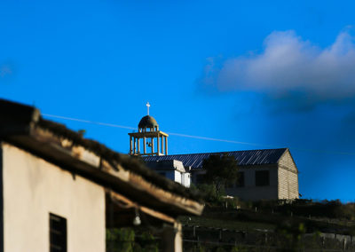
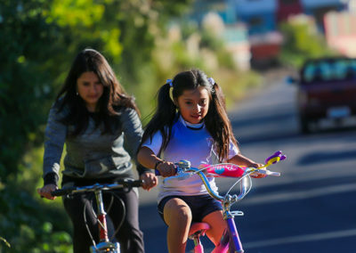
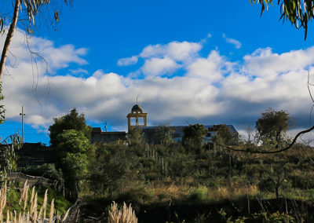
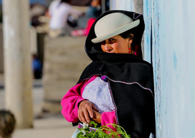
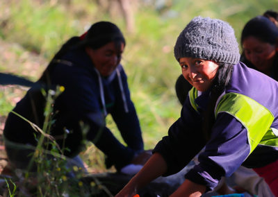
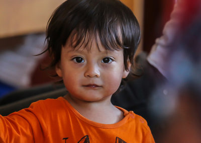
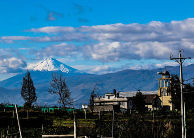
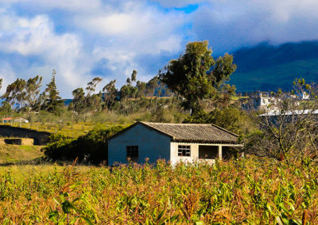
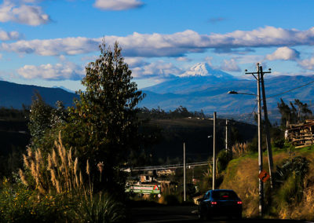
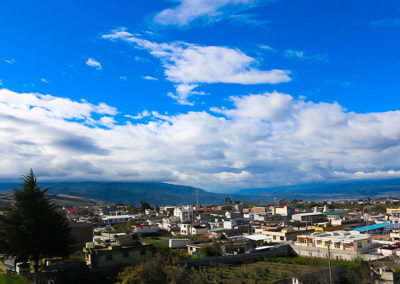
La identidad de Huachi Grande se ha forjado entre episodios históricos, resiliencia frente a desastres naturales y el trabajo solidario de su gente.
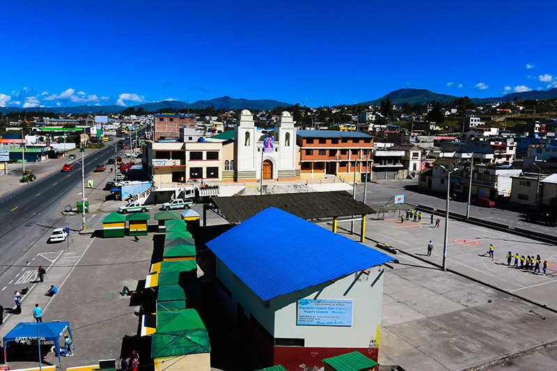
Huachi Grande se ha caracterizado por cultivar cereales y frutas a gran escala como la manzana y, de manera especial, la frutilla, de raíz histórica española.
Según el Libro de Oro, la frutilla fue traída desde España por José Antonio Blanco Antorvoz de Salinas. Tras su travesía, sembraba cada noche; solo en las tierras de Huachi Grande, cerca del antiguo camino “El Rey”, la planta prosperó, dando origen a una tradición agrícola que sostuvo a la parroquia por décadas.
Huachi Grande cuenta con una población aproximada de 15.782 habitantes (PDYOT 2023–2027). La raza predominante es la mestiza.
En los últimos años se registra una migración significativa de comunidades indígenas (provincias de Chimborazo, Bolívar y Cotopaxi), enriqueciendo la diversidad cultural y consolidando a Huachi Grande como un espacio de convivencia e intercambio de la Sierra Central.
Ser un gobierno parroquial rural enfocado en el desarrollo humano de los habitantes de Huachi Grande, que garantiza los derechos ciudadanos y de la naturaleza, promoviendo un sistema económico social y solidario, sostenible y sustentable.
Contribuir al mejoramiento de la calidad de vida de la población de la parroquia Huachi Grande, mediante el cumplimiento de la Constitución, la ley y la prestación eficiente de servicios, representando los intereses comunes e involucrando a los actores sociales en la planificación y gestión del desarrollo integral del territorio.
Actuar con claridad y transparencia, con veracidad y coherencia, priorizando justicia, equidad y apego al orden jurídico.
Cumplir objetivos y metas de forma eficaz, eficiente y oportuna, observando normas administrativas, técnicas y legales.
Gestionar con parámetros claros y confiables, fomentando la participación ciudadana en los asuntos públicos.
Priorizar necesidades comunes, con énfasis en el servicio social y solidario.
Esfuerzo conjunto para alcanzar metas parroquiales, con tolerancia, respeto y empatía.
Buscar y promover la excelencia en los productos y servicios brindados.